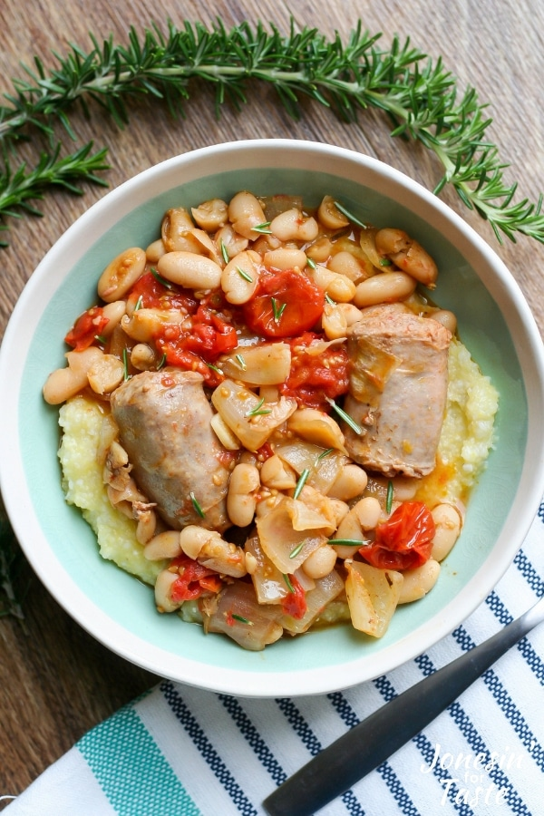

Sausage Casserole

Description
Simple to put together, Sausage Cassoulet is a classic French comfort
food made with slow roasted sausages, tomatoes and white beans.
Ingredients:
- Italian sausages
- cherry tomatoes
- onion
- garlic
- extra virgin olive oil
- Balsamic vinegar
- thyme, rosemary, and bay leaves
- salt and pepper
- cannellini beans
Steps:
- Preheat oven to 425 degrees F.
- In a roasting pan or large low sided cast iron pot, combine tomatoes, olive oil, onion, garlic, and spices together. Arrange cut sausages over the tomato mixture.
- Bake for 45 minutes until the tomatoes have burst and created a sauce and sausages are brown and cooked through.
- Add beans and stir to combine. Cook for an additional 5- 10 minutes until heated through.
- Remove bay leaves before serving.
Return to home